Ce vezi: logo-ul ChirieDube.ro în stânga, meniul în mijloc (Acasă, Flotă, Servicii, Echipă, FAQ, Recenzii, B2B) și butonul portocaliu „Rezervă acum” în dreapta.
La ce folosește: rămâne sus pe pagină ca să poți sări rapid la o altă secțiune sau să începi o rezervare.
1. Bara de sus (meniul)
2. Prima zonă a site-ului
Ce vezi: poza mare cu duba, titlul „Închiriază o dubă simplu și rapid”, un text scurt și două butoane: „Vezi flota” și „Sună acum”. Jos apar și cele 4 avantaje.
La ce folosește: e prima impresie. Clientul înțelege imediat ce oferiți și poate vedea flota sau suna direct.
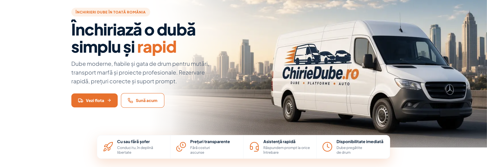
2. Prima zonă a site-ului
3. Cele 4 avantaje
Ce vezi: o bandă albă cu 4 puncte: cu sau fără șofer, prețuri transparente, asistență rapidă, disponibilitate imediată.
La ce folosește: răspunde pe scurt la temerile uzuale (costuri ascunse, șofer, dacă e liberă duba).
3. Cele 4 avantaje
4. Flota de pe pagina principală
Ce vezi: titlul „Dube disponibile pentru închiriere”, butonul „Vezi toată flota” și cardurile cu dube (poză, tip Mică/Mare, volum, preț, Detalii). Săgețile de jos mută lista.
La ce folosește: compari din ochi câteva modele fără să ieși de pe prima pagină.
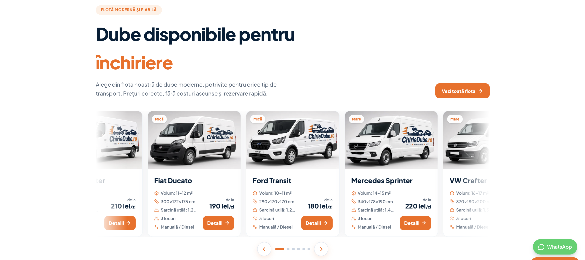
4. Flota de pe pagina principală
5. Cum funcționează închirierea
Ce vezi: caseta „Cum funcționează” cu 3 pași: alegi duba, trimiți cererea, ridici și pleci.
La ce folosește: arată că procesul e simplu, ca să nu pară complicat.
5. Cum funcționează închirierea
6. Ce este inclus în preț
Ce vezi: exemplu de calcul pe zile, lista „inclus în tarif” (RCA, km, garanție, combustibil etc.) și opțiunile extra (șofer, CASCO, extra km).
La ce folosește: clientul înțelege clar ce plătește și ce e opțional, fără surprize la final.
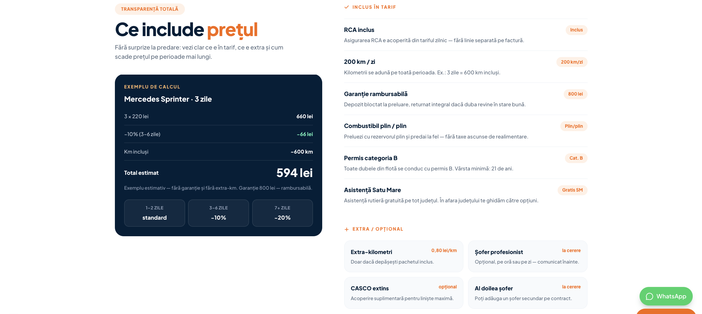
6. Ce este inclus în preț
7. Servicii
Ce vezi: cardul mare „Cu șofer sau fără” cu poză, plus 4 carduri: abonamente de tractare, asistență rutieră, consultanță, limită de kilometri.
La ce folosește: arată că nu închiriați doar dube: oferiți și variante cu șofer, ajutor pe drum și oferte pe termen mai lung.
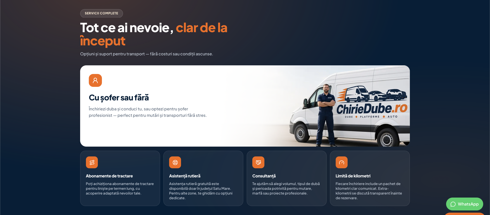
7. Servicii
8. Echipa
Ce vezi: pozele oamenilor din firmă, rolul fiecăruia și datele de contact (telefon, email).
La ce folosește: dă încredere. Clientul vede persoane reale, nu doar un formular.
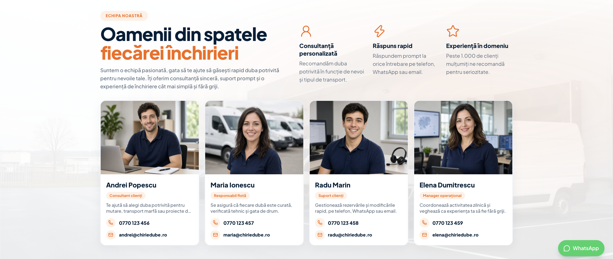
8. Echipa
9. Întrebări frecvente (FAQ)
Ce vezi: listă de întrebări. La click, fiecare se deschide și arată răspunsul.
La ce folosește: răspunde dinainte la nelămuriri, ca să nu trebuiască să sune pentru lucruri simple.
Întrebările și răspunsurile din site acum:
01. Pot închiria duba cu șofer sau fără? Da. Poți conduce tu sau poți opta pentru șofer profesionist, în funcție de tipul transportului și de preferințele tale.
02. Există o limită de kilometri? Da. Fiecare rezervare include un număr de kilometri menționat clar înainte de confirmare. Extra kilometrii se calculează transparent.
03. Ce documente sunt necesare pentru închiriere? Ai nevoie de buletin/carte de identitate și permis de conducere valabil (categoria B). Pentru persoane juridice, solicităm și datele firmei.
04. Unde este valabilă asistența rutieră gratuită? Asistența rutieră gratuită este disponibilă doar în județul Satu Mare. Pentru alte zone te putem orienta către soluții alternative.
05. Pot cumpăra un abonament de tractare? Da. Oferim abonamente de tractare. Contactează-ne pentru detalii despre pachete și acoperire.
06. Mașinile din poze sunt exact cele pe care le primesc? Flota este similară ca model și capacitate, însă mașinile pot să difere față de imagini. Îți comunicăm detaliile la rezervare.
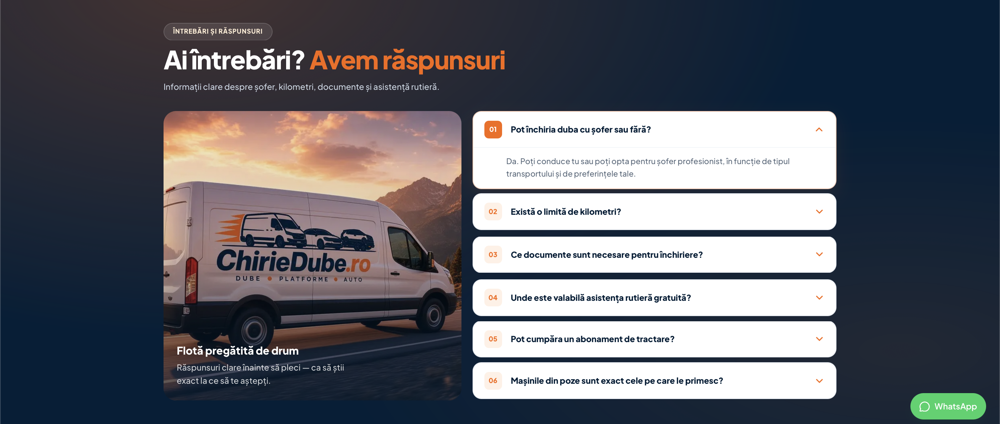
9. Întrebări frecvente (FAQ)
10. Recenzii de la clienți
Ce vezi: o recenzie mare evidențiată plus carduri cu păreri: nume, stele și citatul clientului.
La ce folosește: dovezi că alții au închiriat deja și au fost mulțumiți.
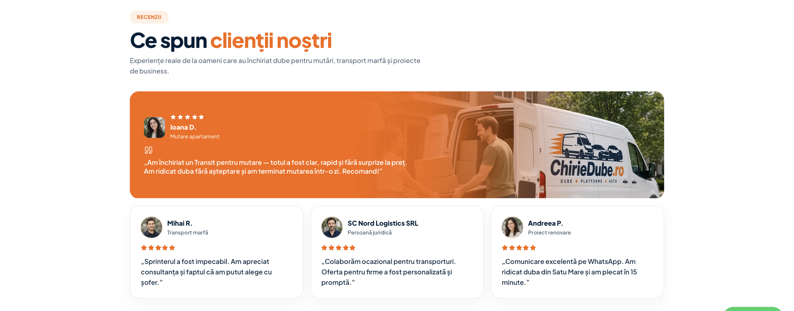
10. Recenzii de la clienți
11. Bandă „Sună acum”
Ce vezi: zonă albastru închis cu mesajul „rezervarea e la un apel”, numărul de telefon și poza cu flota.
La ce folosește: împinge clientul indecis să ia legătura imediat.
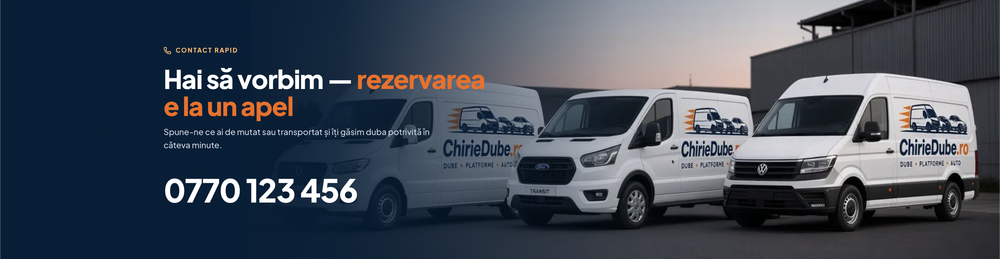
11. Bandă „Sună acum”
12. Cum preiei duba
Ce vezi: ce ai nevoie la preluare: acte, garanție, contract, locul de ridicare.
La ce folosește: reduce stresul din ziua preluării. Știi dinainte la ce să te aștepți.
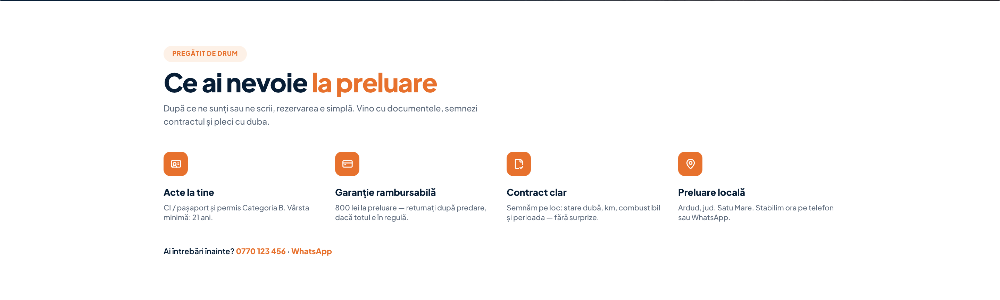
12. Cum preiei duba
13. Ofertă pentru firme + formular
Ce vezi: text pentru companii (contract, factură, cu sau fără șofer) și formularul de cerere ofertă.
La ce folosește: firmele pot cere o ofertă scrisă fără să treacă prin calculatorul de pe pagina dubei.
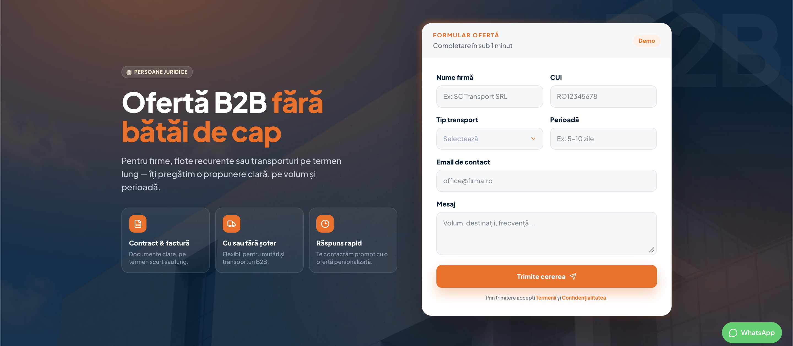
13. Ofertă pentru firme + formular
14. Subsolul paginii (footer)
Ce vezi: logo, datele firmei (DUAL SKYTECH SRL), linkuri de navigare, linkuri legale, contact și program.
La ce folosește: locul cu informațiile oficiale și documentele legale.
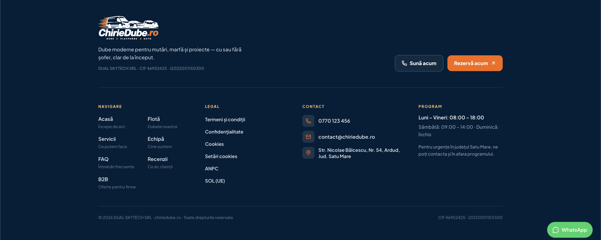
14. Subsolul paginii (footer)
15. Pagina cu toată flota
Ce vezi: catalogul complet cu filtre (dimensiune, brand, preț maxim, volum minim, sortare) și cardurile fiecărei dube, cu butonul „Detalii”.
La ce folosește: clientul își îngustează lista până găsește modelul potrivit, apoi deschide pagina dubei.
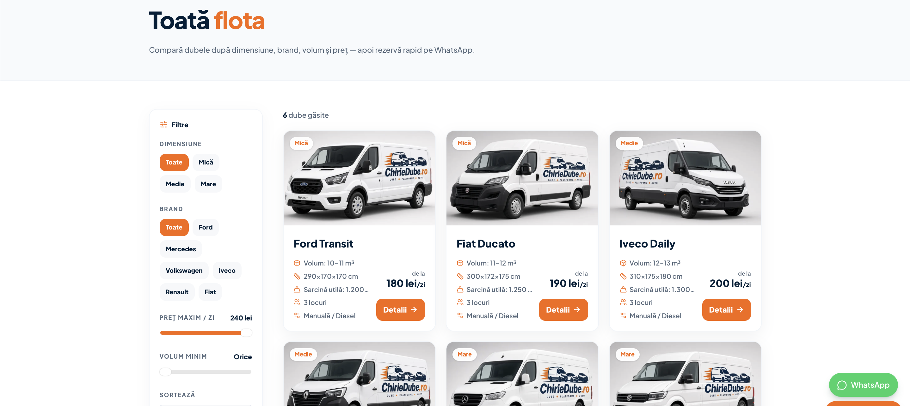
15. Pagina cu toată flota
16. Pagina unei dube (ex. Ford Transit)
Ce vezi: galerie foto, specificații (volum, sarcină, dimensiuni, locuri, transmisie) și calculatorul de ofertă: alegi perioada, vezi totalul și trimiți oferta pe WhatsApp.
La ce folosește: aici se face alegerea concretă și pleacă cererea de rezervare.
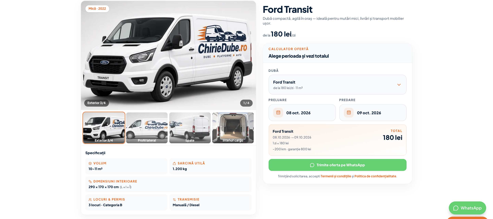
16. Pagina unei dube (ex. Ford Transit)
17. Compararea a două dube
Ce vezi: tabelul „Compară” unde pui duba curentă lângă un alt model (preț pe zi, volum, sarcină, interior, clasă, an). Valorile mai bune sunt evidențiate.
La ce folosește: ajută clientul să decidă între două modele fără să sară înainte și înapoi între pagini.
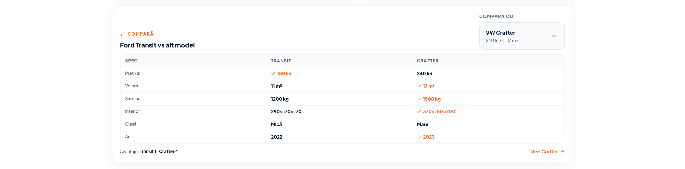
17. Compararea a două dube
18. Fereastra de cookies
Ce vezi: popup-ul GDPR: poți accepta toate cookie-urile, doar pe cele esențiale, sau poți personaliza.
La ce folosește: respectă legea și îi dă vizitatorului control asupra datelor. Preferințele se pot schimba ulterior din footer („Setări cookies”).